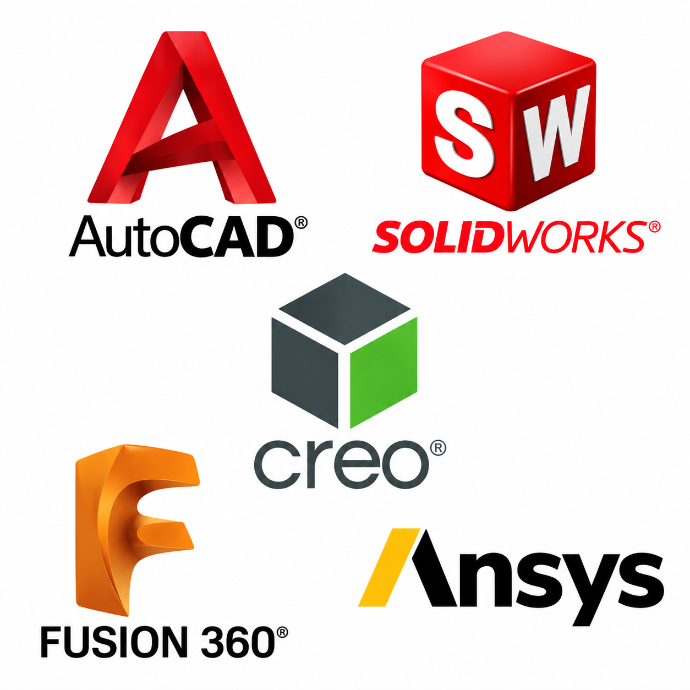

B.E. PROJECT · SOLIDWORKS
Inline Pipe Inspection Robot
A compact inspection concept designed to travel inside pipelines and capture visual data for condition assessment.
I’m Johnson Prem B, a Mechanical Design Engineer working across CAD design, EV battery concepts, product configuration, and engineering data management.

From mechanical systems to consumer products, each project is an opportunity to explore form, function, and detail.
A compact inspection concept designed to travel inside pipelines and capture visual data for condition assessment.
Assembly modelling of piston, connecting rod, and crankshaft relationships.
Component-level modelling and drawing views for a screw-driven clamping mechanism.
Exploration of shell geometry, visor integration, and surface transitions.
A sculptural lamp concept combining a twisted frame with a lightweight lattice structure.
Ergonomic housing concept with attention to grip geometry, part split, and visual balance.
Watch case, dial, bezel, and strap layout developed as a consumer product study.
Fan blade and housing geometry modelled with mounting features and cable routing.
Vehicle exterior modelling study with wheel, body, and accessory details.
A lifting mechanism study focused on linkage geometry, pivot placement, and platform motion.
Exterior form and component placement study for a compact off-road vehicle.
Engine component arrangement explored through a detailed mechanical CAD assembly.
A radial engine layout study highlighting cylinder arrangement and central crankcase.
Blade curvature and hub geometry explored in a compact rotating-component model.
Drawing views and layout for communicating a fan component and its dimensions.
Detail and assembly drawing views for a screw-operated clamping mechanism.
A visual airflow study around a helmet form, exploring flow paths and surface interaction.
 DESIGN / BUILD / REFINE
DESIGN / BUILD / REFINEMechanical Design Engineer with experience in CAD design, EV battery concept development, product configuration, and CAD data management.
I work with engineering teams to develop reusable CAD subassemblies, maintain configurable product structures, and translate design requirements into practical models and documentation. My interests span mechanical assemblies, product development, and manufacturing-oriented design.
My engineering foundation includes quality inspection exposure, technical documentation, and academic design projects involving an inline pipe inspection robot and a frictionless braking system concept.
Professional experience across configurable products, EV battery concepts, and quality inspection.
Fluence BESS India Pvt. Ltd. · Product Configuration & Options and Variants
Software is part of the process. Engineering fundamentals guide the decisions.
3D CAD modelling, assemblies, technical drawings, GD&T, sheet metal design, EV battery packaging concepts, CAD restructuring, BOM management, manufacturing fundamentals, and quality inspection documentation.